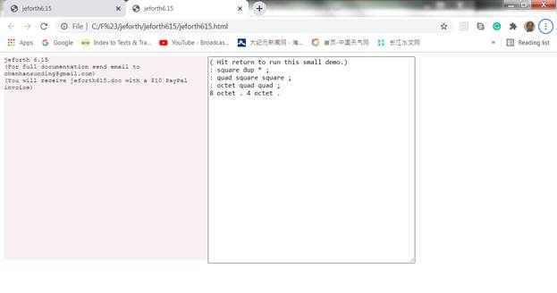
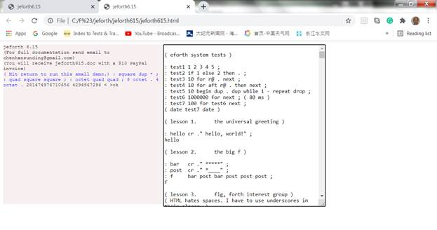
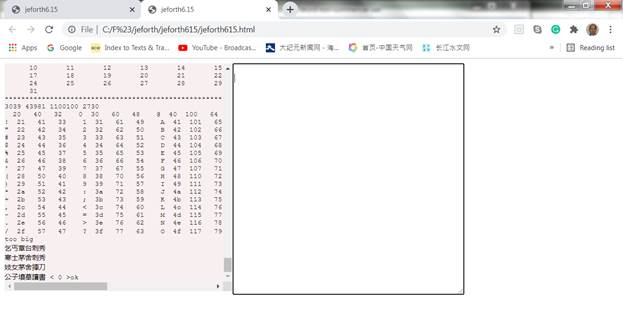
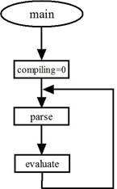
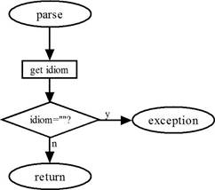
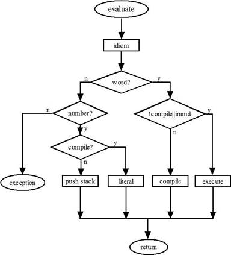

Jeforth615, eForth in JavaScript
Chen-Hanson Ting
Forth is a very simple and very powerful programming language. Chuck Moore invented it in the 1960s. In the 1970s he programmed many minicomputers in astronomy observatories and caused the International Astronomy Society to adopt it as the standard language for observatory automation. In 1978, the Forth Interest Group was formed to promote its use in the then-popular microcomputers. As PC got more memory and disk storage, conventional operating systems and programming languages became widespread, the usage of Forth declined and is now restricted to small microcontrollers.
With the advances in Internet and JavaScript for Webpage programming, it is interesting to see whether we can get Forth back to the main stage of Webpage programming by hosting it on JavaScript. HTML will provide a friendly user interface to an underlying Forth Virtual Machine. Jeforth615 was such an implementation. Because of the expressiveness of JavaScript, the Forth Virtual Machine became very simple and was contained in a small text file: jeforth615.html. It could run on any modern browser, although I only tested it on Google Chrome.
This jeforth system was originally written by Mr. Cheahshen Yap and Mr. Sam Chen in the Taiwan Forth Interest group around 2010-2011. I polished up the code so that all Forth words were self-sufficient objects. It now had a pretty user interface worthy of the Internet. To demonstrate that substantial programs could be developed in this Forth Virtual Machine, I ported a lot of Bach’s organ compositions over, from an early electronic organ I built on a classic IBM PC in the 1980s. I drew the Mandelbot set, and also the earth in different projections. Then I built a Karaoke system playing Chinese gospel hymns.
The Forth Virtual Machine in jeforth615 had only 118 words. jeforth615.html is a small text file of 14,934 bytes. It runs on any PC or tablet with a Chrome browser. It is very easy to use, and very easy to learn.
Here is the chronology of jeforth just to remind me of its development:
13nov21cht 6.15 integrate js file into html file
07may21cht 6.14 minimized
19feb21cht 6.13 see, dump, to, is, evaluate
11feb21cht 6.03 jsBach, qf, q@, does
25jan21cht 5.03 one AudioContext, 6 voices polypohny
18jan21cht 4.01-4.03 haiku eforth
08jan21cht 3.01-3.02 colon words have token lists in pf.
07jan21cht 2.01-2.03 execute-nest-exit, quit loop
2011/12/23 initial version by Cheahshen Yap and Sam Chen */
Chapter 1. Running jeforth615
Copy jeforth615.html to a folder somewhere on your PC. Double click jeforth615.html and Forth gets started. jeforth615.html sets up a Webpage like what is shown in the following picture. On this page, there are 2 text boxes. On the left-hand side is an output box in light pink color. To the right is a white input text box showing a short demo program:
( Hit return to run this small demo.)
: square dup * ;
: quad square square ;
: octet quad quad ;
8 octet . 4 octet .

Move your cursor over the input box and select it. The border of this box darkens showing it is in focus. Now, hit the return key to run this demo. You will get two huge numbers in the pink output box. Please verify them as 8^8 and 4^8. Big numbers are impressive.
This demo does not do much. It demonstrates how Forth defines a new function based on existing functions. The commands ‘dup *’ take a number and multiply it by itself. A new command square replaces these two commands. Another command quad executes square twice and takes a number to its 4th power. The last new command octet executes quad twice and takes a number to its 8th power.

The file Lesson615.txt has 18 examples for you to learn and to program in Forth. Open it with your favorite text editor. Try typing these lessons into the input box, and hit return to test them. You can also copy a lesson and paste it into the white input box. Hit return to run it and verify the results in the pink output box.
For the brave souls out there, select the entire lessons file. Copy it and paste it into the white input box as shown in thist picture:

Hit return to run ALL 18 lessons. After a few seconds, all 18 lessons run and you get the new page like this:

What you see in the pink output box are the results from Lesson 15 and Lesson 18. Scroll up the output box window to see the results produced by earlier lessons. Read these lessons to learn more about this very simple yet powerful Forth programming language.
The white input box looks plain and unimpressive. However, you can cut and paste a large amount of text into it and get the Forth Virtual Machine to execute it. You can scroll the window up and down to see its contents. You can also do some light editing before executing them. The same is for texts in the output box.
Jeforth615 is very
simple because it executes the text you put into the input box and displays
results in the output box. It is your responsibility to manage the text in text
files. Most Forth systems became very complicated when they had to deal with
files and operating systems.
Chapter 2. jeforth615.html
jeforth615.html builds a Webpage for a Forth Virtual Machine (FVM), programmed in JavaScript. It provides a simple modern GUI to let you explore this wonderful programming language on a laptop computer.
The FVM in jeforth was originally written by Mr. Cheahshen Yap in Taiwan FIG, in 2010. He handed it to Sam Chen to implement the whole eForth system with a few graphic demos. The jeforth kernel was only about 100 lines of JavaScript code. Forth words were defined as objects collected in an array words[]. The inner interpreter and the out interpreter were coded as functions accessing Forth words as objects. With the very expressive JavaScript engine behind it, an FVM was implemented with minimal code and overhead.
Sam Chen came to SVFIG in 2011 and presented it in one of our meetings. At the time, I was totally absorbed in designing Forth chips on FPGA, and did not spend enough time to understand it. I did not realize its significance until I was exposed to objects in Python, and felt that we needed a web-ready Forth for the huge body of netizens.
Brad Nelson enlightened us with a beautiful Webpage controlling an ESP32 chip running esp32eforth through WiFi. He showed the proper way for a PC to communicate with a WiFi-enabled robot. I did not understand his browser but appreciated its controlling a robot prototype through a Webpage on my PC.
I thought that we could use a Webpage to run anFVM on PC, in the absence of a robot. The Webpage could be written in HTML, that would exercise an FVM programmed in JavaScript. Then I remembered that jeforth was already developed in JavaScript.
I dug up jeforth and this time with Python wrapped in my head for some time, Yap’s Forth objects started to make sense. It was a good place to start learning JavaScript, as I had yet written 0 line of JavaScript. The most important thing I learned was that Forth words were objects that can be used to build a very simple and very powerful FVM with a very small amount of code.
I had complained loudly that C did not allow me to build a Forth dictionary with variable-length name fields and variable-length parameter fields. Eventually, I wrote a Forth in C that built a Forth dictionary at runtime after the C program started to run. Now, the objects in JavaScript are very flexible and can be designed to host Forth words and a Forth dictionary. Yap’s jeforth clearly demonstrated how an FVM could be coded in JavaScript with Forth words as objects.
Yap designed two fields in a Forth object: a name field and a code field xt, The code field contained a function for a primitive word or a pointer to a token list in a dictionary. Forth word objects were collected in an array words[]. A Forth word object in words[] array was accessed sequentially by a token which is the index of this word object in the array words[].
The dictionary was packed with word objects. A primitive Forth word is referenced by its token OR with a bit in $40000000. A primitive Forth word is executed by executing the function in its xt field. A colon world was executed by executing a token list in the dictionary, starting at a location stored in the xt field.
An inner interpreter executed the token lists recursively. An outer interpreter processed text sent from the tibb input box. Both the inner interpreter and the outer interpreter were tightly wrapped in a function execute(tib).
I thought that the Forth word objects should be constructed more uniformly, and they should contain all the information for all their operations. Each word object should contain a name field, a code field xt, and a parameter field pf, like those in a traditional Forth word. The link field is not necessary, because all word objects are elements of the words[] array, and can be accessed by a sequential token. Yap used an additional field to hold an immediate flag for immediate words. This optional field was included in my design.
The parameter field pf was used by colon words to store object list and by constants and variables to store data. Later while implementing the create-does structure, I realized that mixing different object in the pf field was problematic. The pf field should be used for object lists only, and an additional qf field should be used to store numeric data.
The code fields should contain only JavaScript functions. Word objects were executed by running the executable functions in the code fields. All Forth words were executed by the instruction words[index].xt(). All primitive words execute their own functions. Colon words executed a function nest() in their code fields. nest() is the inner interpreter that interprets a token list stored as an array in the parameter field. words[token].pf[].nest() executes the token list recursively and allows indefinite levels of nesting.
As each colon word had its own token list, there was no need to reference external token lists in a dictionary as in Yap’s original design.
A Forth word is defined as an object in the words[] array. A word object may have 5 fields:
● A name field, with a name string;
● A code field xt, with an executable function;
● An optional parameter field pf, with a token list required by a colon word;
● An optional data field qf, with data for variables, constants, and arrays; and
● An optional immediate flag field, with a true flag to signify an immediate word.
Here I will go through jeforth.html file line-by-line to show you how to build this FVM. This file is only about 300 lines long and it is good reading by yourself. However, if you allow me to tag along, I will be a nice tour guide, highlighting many interesting scenes for you along the way.
Header
Jeforth615.html file is an HTML file with JavaScript code embedded in it. I used to have the HTML code in the jeforth.html file and the JavaScript code store in a separate jeforth.js file. Since both files were fairly small, I thought why not combine them into a single HTML file so that I do not have to throw two files around. It is very satisfying that you can put it anywhere in your PC, double-click it and your browser will pick it up and set up an FVM in a Webpage for you.
The header specifies UTF-8 character set so that we can use Chinese characters in a demo lesson. We also need the Courier New mono-space font to emulate an old-fashion CRT monitor many old programmers were accustomed to.
<!DOCTYPE html>
<html><head>
<meta http-equiv="content-type" content="text/html; charset=UTF-8">
<title>jeforth6.15</title>
<style>body{font-family:'Courier New',monospace;font-size:12px;}
</style>
</head>
Body
In the body part of the HTML file, we allocate two windows for the user interface. The left window is an output text box and the right window is an input box. The input box displays a short demo program. Select this window with the mouse and hit return to run this small demo.
A <div> tag is used to create the output box and a <textarea> tag is used to create the input box.
<body>
<div id="log" style="float:left;overflow:auto;height:400px;width:400px;
background-color:#f8f0f0;">
</div>
<textarea id="tib" style="height:400px;width:300px;"
onkeydown="if (13===event.keyCode) forth()">
( Hit return to run this small demo.)
: square dup * ;
: quad square square ;
: octet quad quad ;
8 octet . 4 octet .
</textarea>
</body>
Script
The following <script> section has JavaScript code to build and run the FVM in JavaScript. The script first initializes an output box as log and an input box as tib (terminal input buffer). The function forth() sends text in tib to the main() routine to be executed or evaluated. When main() is done with evaluating the text, it sends back an ‘ok’ message. The script then clears the input tib buffer. If main() encountered any problem, it throws an exception which will be caught in the try-catch-finally construct.
The logtype(t) function adds a string t to the output log box. It is the principal output routine of the FVM.
<script>
var log=document.getElementById("log");
log.innerHTML="jeforth 6.15<br/>"+
"(For full documentation send email to chenhansunding@gmail.com)<br/>"+
"(You will receive jeforth615.doc with a $10 PayPal invoice)<br/>";
var tib=document.getElementById("tib");
function forth() {
log.innerHTML+="<font color='blue'>"+tib.value+" </font>";
try{main(tib.value);}
catch(err){logtype(err.toString()+"<br/>");}
finally{tib.value="";log.scrollTop=log.scrollHeight;}
}
function logtype(t){log.innerHTML=log.innerHTML+t;}
I put in a short message here to encourage you to donate $10 for the efforts to maintain and to improve the eForth Model. This jeforth615 is the results of many years of work from many people. Forth is finally crystallized in a shape worthy of your attention and your contribution.
Forth Virtual Machine
Following is a list of variables used in FVM. The variables in JavaScript are very flexible. They hold numeric data, strings, objects, arrays, and even stacks. Data type in a variable can change dynamically.
|
ip |
Instruction pointer, pointing to a token to be executed next |
|
wp |
Word pointer, pointing to the word object holding a token list under execution |
|
w |
‘Who am I’ word pointer, pointing to the word object under execution |
|
stack |
Data stack or data stack |
|
rstack |
Return stack |
|
tibb |
Terminal input buffer |
|
ntib |
Pointing to the character in tib currently being interpreted |
|
base |
Current base for numeric conversions |
|
idiom |
A character string just parsed out of tib to be interpreted |
|
compiling |
A flag indicating that the interpreter is compiling a new word |
|
fence |
Pointing to the last word in the dictionary. It prevents ‘forget’ to trim the dictionary below this word. |
|
newname |
The name of the word currently being compiled. |
|
words |
The Forth dictionary. It is a giant array of word objects shown in the next section |
In jeforth, a word refers to a word object, that has a name field, a code field, an optional parameter field, an optional data field, and an optional immediate flag field. Word objects are collected in a dictionary, that is a giant array of word objects named words[]. The index of a word in the words[] array is called a token. A word is known externally by its name, and internally by its token.
On boot-up, all word objects except the first one are primitive words, that have only a name field and a code field. The first word quit in the dictionary is a colon word, that has a parameter field with a short token list. New words compiled after booting are colon words with a token list in their parameter field.
A Forth program is generally a text file with a list of character strings separated by white space characters, similar to an essay in English. An outer interpreter or a text interpreter evaluates this list of character strings by parsing out the character strings called idioms. If an idiom has a matching name in a word object, it is a valid word with a token. The interpreter may execute this token or may compile the token into a token list for later execution, depending on whether the interpreter is in an interpreting mode or in a compiling mode. The idiom may be a number, and the interpreter pushes the number on the data stack, or compiles it as a literal in a token list for later stack operations. The idiom may also be a string, to be used by words that process strings.
// Forth Virtual Machine
var ip=0,wp=0,w=0; // instruction and word pointers
var stack=[],rstack=[]; // array allows push and pop
var tibb="",ntibb=0,base=10;
var idiom="";
var compiling=false;
var fence=0;
var newname; // for word under construction
The Inner Interpreter
FVM executes Forth words by running JavaScript functions associated with Forth words. Internally Forth words are represented by their tokens. Execute(n) looks up a token n in the Forth dictionary and execute the JavaScript function stored in its xt field.
In primitive words, JavaScript functions in their xt fields are executed. In colon words, the xt fields have a function nest(). Nest() allows colon words to call colon words, nested to indefinite levels. This is the most powerful feature of Forth, making new words out of existing words.
Colon words have token lists in their pf parameter fields. The word pointer wp always points to the token currently being executed, and the instruction pointer ip always points to the token to be executed next in the current token list. Nest() pushes the current wp and the current instruction pointer ip on the return stack and starts executing the first token in the new token list.
At the end of a token list there is always an exit token which returns to the next token whose wp and ip pointers were saved on the return stack.
In a variable word, xt contains a function dovar. It returns the token of this variable word so that subsequent words can read its value stored in the qf field, or modify this value.
In a constant word, xt contains a function docon. It returns the value stored in its qf field to the data stack.
Execute, nest, exit, docon, and dovar are generally referred to as inner interpreters in an FVM. They are JavaScript functions executed by FVM. For that matter, the functions in the xt field of all primitive words could be called inner interpreters. However, since the prevalent words in Forth applications are colon words, nest is more often referred to as the inner interpreter to highlight the fact that Forth colon words are often deeply nested.
|
execute(n) |
Execute word with token n by jumping into it xt field and executing the code in xt. |
|
nest() |
This is the inner interpreter of token lists. It first pushes wp and ip on the return stack and then starts to process the token list in the parameter field pf of this colon word. It continues processing this list until exit() forces a -1 into ip and terminates the infinite loop. |
|
exit() |
Terminate executing a token list by forcing a -1 into the variable ip. It actually terminates the infinite loop in next(). |
|
dovar() |
The inner interpreter of a variable or an array. |
|
docon() |
The inner interpreter of a constant |
function execute(n){w=n;words[n].xt();}
function nest(){ // inner interpreter
rstack.push(wp);rstack.push(ip);wp=w;ip=0;
while (ip>=0){w=words[wp].pf[ip++];words[w].xt();}
ip=rstack.pop();wp=rstack.pop();}
function exit(){ip=-1;}
function dovar(){stack.push(w);}
function docon(){stack.push(words[w].qf[0]);}
Supporting Functions
The Forth outer interpreter evaluates a list of idioms, like:
idiom1 idiom2 synonum3 idiom4 …
Within a list, there are often colon words like:
: name idiom1 idiom2 synonum3 idiom4 …;
The command ‘:’ turns the interpreter into a compiler, which compiles a new word ‘name’ with a token list, terminated by a ‘;’ command. When the colon word ‘name’ is later executed, its token list is executed by the inner interpreter nest. In a token list, many tokens may call other colon words. Nest can process deeply nested lists.
The outer interpreter uses parse to parse strings or idioms out of tibb buffer and looks them up in the dictionary with find. If an idiom matches the name of a word in the dictionary, a token is returned. If the token is immediate or FVM is interpreting, the token is executed by exec; otherwise it is compiled by compile. If the idiom is not in the dictionary, it is converted to a number. If compiling, the number is compiled as a number literal; otherwise, it is pushed on the data stack. If the idiom is not a number either, an exception is generated and the outer interpreter is terminated; otherwise, outer interpreter continues to parse the next idiom and evaluates it
Parse, find, compile, and evaluate are components of the outer interpreter. In a traditional Forth system, they were built up from a large collection of colon words, making an FVM fairly complicated. In jeforth615, they are all written as JavaScript functions. They make the outer interpreter very simple and reduce the FVM to less than 300 lines of code.
The outer interpreter has to convert number strings to their binary representations and either push them on the data stack or store them in the dictionary as literals. JavaScript has native functions parseFloat() and parseInt() to do the conversion. Evaluate simply calls them to do the conversion and no external function needs to be coded.
The HTML Webpage collects input characters from the input box to a variable tibb and sends them to the main function in JavaScript for evaluation. The main function passes the characters to the outer interpreter quit. Quit parses out strings as idioms and evaluate evaluates idioms until input characters are exhausted. The main function can be illustrated in the following picture:

The functions parse is illustrated in the next picture:

When a null string is returned by the parse, an exception is thrown to the forth() function so that the HTML Webpage will get another set of input characters from its input box.
The function evaluate evaluates the idiom parsed out of the tibb buffer. It can be illustrated clearly in the following picture:

|
ssdump() |
Dump the contents in the data stack with an “ok” prompt. |
|
compile(nword) |
If nword is a string, find its token in the dictionary and compile the token, If nword is a token or a number compile it directly. |
|
parse(delimit) |
Scan the characters in tib from ntib forward until the next delimiting character delimit. It returns the parsed string in a variable idiom. If it reaches the end of tib, when all characters in tib are exhausted, it throws a message to HTML Webpage that displays the contents of the data stack. Forth is done with tib. It waits the HTML Webpage to send the next block of characters to tib. |
|
find(name) |
Look up the idiom name parsed out of tib, to see if it is a valid word in the dictionary. It returns a token for a valid word in the dictionary. It returns a -1 if none of the words have this name. |
|
evaluate() |
Process idiom just parsed out. If idiom is a token, execute it if compiling is false, but compile it otherwise. If idiom is not a token, convert it to a number. The number is pushed on the data stack if compiling is false, otherwise, compile the number as a literal. If idiom is not a token nor a number, throw a ‘?’ error. |
|
tick() |
Parse the next idiom in tib. If it is a word, return its token. Otherwise, throw a ‘?’ error. |
|
sleep(ms) |
Delay ms milliseconds. |
function ssdump() {logtype("< ");
for (i=0;i<stack.length;i++)
logtype(stack[i].toString(base)+" ");
logtype(">ok");}
function compile(nword) {
if (typeof(nword)==="string"){var n=find(nword);}
else n=nword;
if (n>-1) words[words.length-1].pf.push(n);
else {stack=[]; throw(" "+nword+" ? ");}}
function parse(delimit){
idiom="";
if (delimit===undefined) delimit=" ";
while (tibb.charCodeAt(ntibb)<=32) ntibb++;
while(ntibb<tibb.length && tibb.substr(ntibb,1)
!=delimit && tibb.substr(ntibb,1)!="\n")
{idiom+=tibb.substr(ntibb++,1);}
if (delimit!=" ") ntibb++;
if (idiom==="") throw(" < "+stack.join(" ")+" >ok");
return idiom;}
function find(name) {
for (i=words.length-1;i>=0;i--)
{if (words[i].name===name) return i;}
return -1;}
function evaluate(){ // interpreter/compiler
var n=parseFloat(idiom); // convert to number
var nword=find(idiom); // name?
if (base!=10) {n=parseInt(idiom,base);}
if (nword>-1) { // valid token
if (compiling && !words[nword].immediate)compile(nword);
else {execute(nword);}} // compile/execute
else // number?
if (n || idiom==0) { // idiom is a number
if (compiling) {compile("dolit");compile(n);}
else {stack.push(n);}} // compile/push
else { // error
if (compiling)words.pop();// delete defective word
stack=[];throw(" "+idiom+" ? ");
}
}
function tick(){idiom=parse();var i=find(idiom);
if(i>=0)stack.push(i);
else throw(" "+idiom+" ? ");}
function sleep(ms){var d=Date.now();var n=0;
do {n=Date.now();} while (n-d < ms);}
The Outer Interpreter
As mentioned before, the Forth dictionary is a giant array words[] with all the primitive Forth words defined in JavaScript, except the first word quit, which is actually the outer interpreter. The FVM is always processing a token list. There must be a list to start with. So, I coded the word quit at the beginning of the words[] array as a colon word. Its token is a 0. When quit is executed, the function nest() in its code field is executed, and it interprets the token list [1,2,3,0] in its pf parameter field. This token list could have been compiled by the following Forth program:
: quit begin parse evaluate again
As you can see in the words[] array, parse has a token of 1, evaluate has a token of 2, and branch has a token of 3. The 0 following token 3 (branch) is the address of parse at the beginning of the token list in quit. The list elements [3,0] means branch(0), branching back to parse.
The token list [1,2,3,0] is a beautiful example of Forth programming. I think it is the prettiest Forth program I have ever written.
All primitive Forth words are objects in a dictionary, an array called words[]. Each word object has a name field and a code field xt. New colon words are compiled by the outer interpreter and appended to the dictionary array. The FVM thus grows until an application is completely coded.
|
main(cmd) |
Entry point of Forth. cmd is a string passed from the input box in HTML. It is used to initialized tib. The rstack is cleared. Other system variables are initialized. It then executes the word quit at the beginning of the dictionary. quit is the Forth outer interpreter.. |
|
words |
Forth dictionary, a giant array for primitive words. New colon words will be appended to this array after booting. |
|
quit |
( -- ) Outer interpreter |
|
parse |
( -- ) Prarse out next idiom in input buffer tib |
|
evaluate |
( -- ) Process parsed idiom |
|
branch |
( -- ) Branch to following address |
// Outer interpreter
function main(cmd) {tibb=cmd;ntibb=0;
rstack=[];wp=0;ip=0;w=0;compiling=false;exec(0);}
// Dictionary
var words = [
{name:"quit" ,xt:function(){nest();},pf:[1,2,3,0]}
,{name:"parse" ,xt:function(){idiom=parse();}}
,{name:"evaluate",xt:function(){evaluate();}}
,{name:"branch",xt:function(){ip=words[wp].pf[ip];}}
Stacks
In JavaScript, all objects have push() and pop() methods. We can push a new word object on the words[] dictionary. We can push new tokens on a token list. We can push new data on the qf[] array. We can of course implement the classic data stack and return stack common to all Forth Virtual Machines.
A data stack is defined by a variable stack[] and a return stack is defined by a variable rstack[]. Items are pushed on the data stack by stack.push(item) and are popped off by item=stack.pop().
When the stack[] is empty, a stack.pop() instruction causes an exception that will be caught in the jeforth615.htnl Webpage inside the forth() function.
The entire contents of the data stack stack[] are displayed when the outer interpreter successfully finishes evaluating all the text passed to it in the terminal input buffer tib. This way you can always see the entire stack, and it is the best way to observe how things are going. Programming problems always reveal themselves when unexpected results showing up on the data stack.
When jeforth615 encounters an error, it always clears the data stack before throwing an exception message ‘?’ back to the HTML Webpage. If you have to clear the data stack, the easiest way is typing some gibberish like xxx and forcing a ‘?’ exception.
In JavaScript, a stack can grow indefinitely. The system most likely crashes without warning when a stack overflows. JavaScript does watch over the stack underflow condition and throws an exception and returns to the HTML Webpage. However, the error message it throws up is often cryptic as it accesses unpredictable data under the stack.
There are many different ways to implement data stack words. I found that the array methods slice() and splice() are especially attractive. As shown in the source code, stack words that preserve the stack contents are best implemented with slice(). When stack contents are changed, splice() is a better choice.
|
dup |
( a -- a a ) Duplicate tos |
|
over |
( a b -- a b a ) Duplicate 2nd tos item |
|
2dup |
( a b -- a b a b ) Duplicate top 2 items of tos |
|
4dup |
( a b c d -- a b c d a b c d ) Duplicate top quad tos items |
|
swap |
( a b -- b a ) Swap two tos items |
|
rot |
( a b c -- b c a ) Rotata 3rd tos item to top |
|
-rot' |
( a b c -- c a b ) Rotate tos to 3rd position |
|
2swap |
( a b c d -- c d a b ) Swap two pairs of tos items |
|
2over |
( a b c d -- a b c d a b ) Duplicate second pair tos items |
|
pick |
( i -- a ) Copy ith tos item to top |
|
roll |
( i -- a ) Roll ith tos item to top |
|
drop |
( a -- ) Discard tos |
|
nip |
( a b -- a ) Discard 2nd tos item |
|
2drop |
( a b -- ) Discard two tos items |
|
>r |
( a -- ) Push tos to return stack |
|
r> |
( -- a ) Pop return stack to tos |
|
r@ |
( -- a ) Duplicate top of return stack to tos |
// stacks
,{name:"dup" ,xt:function(){stack=stack.concat(stack.slice(-1));}}
,{name:"over" ,xt:function(){stack=stack.concat(stack.slice(-2,-1));}}
,{name:"2dup" ,xt:function(){stack=stack.concat(stack.slice(-2));}}
,{name:"2over" ,xt:function(){stack=stack.concat(stack.slice(-4,-2));}}
,{name:"4dup" ,xt:function(){stack=stack.concat(stack.slice(-4));}}
,{name:"swap" ,xt:function(){stack=stack.concat(stack.splice(-2,1));}}
,{name:"rot" ,xt:function(){stack=stack.concat(stack.splice(-3,1));}}
,{name:"-rot" ,xt:function(){stack.splice(-2,0,stack.pop());}}
,{name:"2swap" ,xt:function(){stack=stack.concat(stack.splice(-4,2));}}
,{name:"2over" ,xt:function(){stack=stack.concat(stack.slice(-4,-2));}}
,{name:"pick" ,xt:function(){
j=stack.pop()+1;stack.push(stack.slice(-j,-j+1));}}
,{name:"roll" ,xt:function(){
j=stack.pop()+1;stack.push(stack.splice(-j,1));}}
,{name:"drop" ,xt:function(){stack.pop();}}
,{name:"nip" ,xt:function(){stack[stack.length-2]=stack.pop();}}
,{name:"2drop" ,xt:function(){stack.pop();stack.pop();}}
The return stack is used by the inner interpreter nest() to save the current word pointer wp and the current instruction pointer ip. Its operations are mostly hidden from you. However, it is a convenient place to save a few parameters on the data stack, when there are too many items pushed on it, and you have to get down deeper. Remember to pop off all the items you pushed on the return stack before a colon work is finished. Leaving things on the return stack is a very easy way to crash a Forth Virtual Machine.
The for-next looping mechanism also uses the return stack to store the loop index. In a for-next loop, use r@ to get the current loop index.
,{name:">r" ,xt:function(){rstack.push(stack.pop());}}
,{name:"r>" ,xt:function(){stack.push(rstack.pop());}}
,{name:"r@" ,xt:function(){stack.push(rstack[rstack.length-1]);}}
Math
JavaScript used floating-point numbers exclusively. Jeforth615 adapts to this environment smoothly and lets JavaScript handle all the numbers and their operations.
As jeforth adopts floating numbers from JavaScript, it inherits all the Math operations in JavaScript. All transcendental functions are thus leveraged.
JavaScript converts strings starting with numeric characters to numbers and ignores subsequent non-numeric characters. jeforth identifies 2drop as a valid Forth word. It interprets 3drop as number 3 because 3drop is not a valid Forth word. Therefore, avoid starting a Forth name with numerals.
jeforth bitwise logic operations, (and, or, xor), are also handled by JavaScript. The numbers are first converted to 32-bit integers and the bitwise logic operations are performed. The 32-bit results are converted back to floating numbers and pushed back on the data stack.
|
+ |
( a b -- c ) Add two tos items |
|
- |
( a b -- c ) Subtract tos from 2nd item |
|
* |
( a b -- c ) Multiply two tos items |
|
/ |
( a b -- c ) Divide 2nd item by tos |
|
mod |
( a b -- c ) Modulus 2nd item by tos |
|
and |
( a b -- c ) Bitwise AND of two tos items |
|
or |
( a b -- c ) Bitwise OR of two tos items |
|
xor |
( a b -- c ) Bitwise XOR of two tos items |
|
negate |
( a -- b ) Negate tos |
// math
,{name:"+" ,xt:function(){stack.push(stack.pop()-(0-stack.pop()));}}
,{name:"-" ,xt:function(){b=stack.pop();stack.push(stack.pop()-b);}}
,{name:"*" ,xt:function(){stack.push(stack.pop()*stack.pop());}}
,{name:"/" ,xt:function(){b=stack.pop();stack.push(stack.pop()/b);}}
,{name:"mod",xt:function(){b=stack.pop();stack.push(stack.pop()%b);}}
,{name:"and",xt:function(){stack.push(stack.pop() & stack.pop());}}
,{name:"or" ,xt:function(){stack.push(stack.pop() | stack.pop());}}
,{name:"xor",xt:function(){stack.push(stack.pop() ^ stack.pop());}}
,{name:"negate",xt:function(){stack.push(0-stack.pop());}}
Logic
Logic words and, or, and xor return true or false flags. Comparison commands generally return true or false flags. When a flag is used in arithmetic commands, a true flag acts like a 1 and a false flag acts like a 0.
|
0= |
( a -- f ) Return true if a=0 |
|
0< |
( a -- f ) Return true if a<0 |
|
0> |
( a -- f ) Return true if a>0 |
|
0<> |
( a -- f ) Return true if a is not 0 |
|
0<= |
( a -- f ) Return true if a<=0 |
|
0>= |
( a -- f ) Return true if a>=0 |
|
= |
( a b -- f ) Return true if a=b |
|
> |
( a b -- f ) Return true if a>b |
|
< |
( a b -- f ) Return true if a<b |
|
<> |
( a b -- f ) Return true if a is not equal to b |
|
>= |
( a b -- f ) Return true if a>=b |
|
<= |
( a b -- f ) Return true if a<=b |
|
== |
( a b -- f ) Return true if a=b |
// compare
,{name:"0=" ,xt:function(){stack.push(stack.pop()===0);}}
,{name:"0<" ,xt:function(){stack.push(stack.pop()<0);}}
,{name:"0>" ,xt:function(){stack.push(stack.pop()>0);}}
,{name:"0<>",xt:function(){stack.push(stack.pop()!==0);}}
,{name:"0<=",xt:function(){stack.push(stack.pop()<=0);}}
,{name:"0>=",xt:function(){stack.push(stack.pop()>=0);}}
,{name:"=" ,xt:function(){stack.push(stack.pop()===stack.pop());}}
,{name:">" ,xt:function(){b=stack.pop();stack.push(stack.pop()>b);}}
,{name:"<" ,xt:function(){b=stack.pop();stack.push(stack.pop()<b);}}
,{name:"<>" ,xt:function(){stack.push(stack.pop()!==stack.pop());}}
,{name:">=" ,xt:function(){b=stack.pop();stack.push(stack.pop()>=b);}}
,{name:"<=" ,xt:function(){b=stack.pop();stack.push(stack.pop()<=b);}}
,{name:"==" ,xt:function(){stack.push(stack.pop()==stack.pop());}}
Number Output
hex and decimal switch number conversion radix to hexadecimal and to decimal. The radix base is not directly accessible in jeforth. However, the command base! can change the radix base ranging from 2 to 36. jeforth shows all numbers correctly with integers. With fractional floating-point numbers, do expect strange-looking numbers displayed when not in the decimal radix.
jeforth always displays the entire contents on the data stack, and it is generally not necessary to display numbers with special commands. To help you format numbers in a table, the .r command is preserved. It displays a number in columns of a specified width.
|
base@ |
( -- a ) Return current base |
|
base! |
( a -- ) Make a the current base |
|
hex |
( -- ) Change to hexadecimal base |
|
decimal |
( -- ) Change to decimal base |
|
cr |
( -- ) Display a carriage return |
|
. |
( a -- ) Display number a on tos |
|
.r |
( a n -- ) Display a in n columns |
|
emit |
( a -- ) Display an ASCII character |
|
space |
( -- ) Display a space |
|
spaces |
( n -- ) Display n spaces |
// output
,{name:"base@" ,xt:function(){stack.push(base);}}
,{name:"base!" ,xt:function(){base=stack.pop();}}
,{name:"hex" ,xt:function(){base=16;}}
,{name:"decimal",xt:function(){base=10;}}
,{name:"cr" ,xt:function(){logtype("<br/>\n");}}
,{name:"." ,xt:function(){logtype(stack.pop().toString(base)+" ");}}
,{name:".r" ,xt:function(){
n=stack.pop();logtype(stack.pop().toString().padStart(n," "));}}
,{name:"emit" ,xt:function(){
s=String.fromCharCode(stack.pop());logtype(s);}}
,{name:"space" ,xt:function(){s=" ";logtype(s);}}
,{name:"spaces",xt:function(){
n=stack.pop();s="";for(i=0;i<n;i++)s+=" ";logtype(s);}}
Literals
This is a good place to mention that a token list generally contains tokens. However, other types of objects can be embedded in a token list. They are number literals, address literals, and string literals.
A number literal is a token dolit followed by a number object. An address literal is an address token like branch, 0brach, and donext, followed by an address. A string literal is a string token like dostr and dotstr, followed by a string object. Since the token list has a very simple and uniform structure, it can be decompiled very easily, as shown later in the see command.
Character strings are a very important data type for a program to communicate with you. Error messages, appropriate warnings, and suggestions can be displayed dynamically to help you using the system in a friendly way. Character strings are compiled in the colon words as string literals. Each string literal consists of a string token that uses the next token to store the string as an object or a string literal. It is similar to a number literal that has a dolit token followed by a token converted to a number object. This special JavaScript property allowing items in a list or array to be used as objects makes it very easy to construct token lists with embedded string and number literals.
|
[ |
( -- ) Change to interpreting mode |
|
] |
( -- ) Change to compiling mode |
|
find |
( -- w ) Return token of next idiom |
|
' |
( -- w ) Return token of next idiom outside colon idiom. |
|
dolit |
( -- ) Push next token on stack |
|
dostr |
( -- w ) Return token of next string |
|
"s""" |
( -- w ) Compile next idiom as a string literal |
|
dotstr |
( -- ) Display next compiled string |
|
".""" |
( -- ) Compile next idiom as a string literal for display |
|
( |
( -- ) Comment to the next ) |
|
.( |
( -- ) Display next idiom up to next ) |
|
\ |
( -- ) Comment to the new line |
// strings
,{name:"[" ,xt:function(){compiling=false;},immediate:true}
,{name:"]" ,xt:function(){compiling=true;}}
,{name:"find" ,xt:function(){idiom=parse(); stack.push(find(idiom));}}
,{name:"'" ,xt:function(){tick();}}
,{name:"dolit" ,xt:function(){stack.push(words[wp].pf[ip++]);}}
,{name:"dostr" ,xt:function(){stack.push(words[w].pf[ip++]);}}
,{name:'s"' ,xt:function(){s=parse('"');
if (compiling) {compile("dostr");compile(s);}
else {stack.push(s);};},immediate:true}
,{name:"dotstr",xt:function(){n=words[wp].pf[ip++];logtype(n);}}
,{name:'."' ,xt:function(){s=parse('"');
if (compiling) {compile("dotstr");compile(s);}
else {logtype(s);};},immediate:true}
,{name:'(' ,xt:function(){s=parse(')');},immediate:true}
,{name:'.(' ,xt:function(){s=parse(')');logtype(s);},immediate:true}
,{name:'\\' ,xt:function(){s=parse('\n');},immediate:true}
Control Structures
When the outer interpreter compiles a colon word, it builds a token list. Chuck Moore invented a very simple mechanism to build control structures in a token list. He designated a set of words that are executed while compiling. These words are called immediate words. These immediate words build control structures by compiling address literals. The addresses in the address literals are resolved correctly in a single pass, using the data stack to hold addresses for forward and backward referencing.
Following are all the 7 control structures used in jeforth:
|
Conditional branch |
if ... then |
|
|
if ... else ... then |
|
Finite loop |
for ... next |
|
|
for ... aft ... then... next |
|
Infinite loop |
begin ... again |
|
Indefinite loop |
begin ... until |
|
|
begin ... while ... repeat |
The control structure use three address literals: branch, 0branch, and donext. The following table shows how these immediate words are used in colon words to build control structures:
|
exit |
( -- ) Unnest a list |
|
0branch |
( f -- ) Branch to the following address if tos is 0 |
|
donext |
( -- ) Loop to the following address |
|
if |
( f -- ) Skip the next true branch if tos is 0 |
|
else |
( -- ) Take the next false branch |
|
then |
( -- ) Terminate an if-else-then branch structure |
|
begin |
( -- ) Start a begin loop structure |
|
again |
( -- ) Repeat the begin loop |
|
until |
( f -- ) Repeat begin loop if tos is 0 |
|
while |
( f -- ) Skip the following true branch if tos is 0 |
|
repeat |
( -- ) Repeat begin loop |
|
for |
( n -- ) Repeat following loop n+1 times |
|
next |
( -- ) Decrement top of the return stack. Exit loop if top of return stack is negative. |
|
aft |
( -- ) Skip loop once for the first time |
The following table shows what these immediate words actually do at compile time. In the comments here is for an address to be compiled later into an address literal, and there is a pointer pointing to an address object that needs to be resolved.
|
then |
( there -- ) terminates a conditional branch structure. It uses the address of next token to resolve the address literal at there left by if or else. |
|
for |
( -- here ) starts a for-next loop structure in a colon definition. It compiles >r, which pushes a loop count on the return stack. It also leaves the address of the next token on data stack, so that next will compile a donext address literal with the correct branch address. |
|
begin |
( -- here ) starts an infinite or indefinite loop structure. It does not compile anything, but leave the current token address on data stack to resolve address literals compiled later. |
|
next |
( here -- ) terminate a for-next loop structure, by compiling a donext address literal, branch back to the address here on data stack. |
|
until |
( here -- ) terminate a begin-until indefinite loop structure. It compiles a qbranch address literal using the address here on data stack. |
|
again |
( here -- ) terminate a begin-again infinite loop structure. . It compiles a branch address literal using the address here on data stack. |
|
if |
( -- there ) starts a conditional branch structure. It compiles a qbranch address literal, with a 0 in the address field. It leaves the address of this address field on data stack. this address will later be resolved by else or then in closing the true clause in the branch structure. |
|
ahead |
( -- there ) starts a forward branch structure. It compiles a branch address literal, with a 0 in the address field. It leaves the address of this address field on data stack. this address will later be resolved when the branch structure is closed. |
|
repeat |
( there here -- ) terminates a begin-while-repeat indefinite loop structure. It compiles a branch address literal with address there left by begin, and uses the address of next token to resolve the address literal at here a. |
|
aft |
( here – here there ) jumps to then in a for-aft-then-next loop the first time through. It compiles a branch address literal and leaves its address field on stack. this address will be resolved by then. It also replaces address a left by for by the address of next token so that next will compile a donext address literal to jump back here at run time. |
|
else |
( there -- there ) starts the false clause in an if-else-then structure. It compiles a branch address literal. It uses the current token address to resolve the branch address in there, and replace there with the address of its address literal. |
|
while |
( here – there here ) compiles a qbranch address literal in a begin-while-repeat loop. the address here of this address literal is swapped with address there left by begin, so that repeat will resolve all loose ends and build the loop structure correctly. |
// structures
,{name:"exit" ,xt:function(){exit();}}
,{name:"0branch",xt:function(){
if(stack.pop()) ip++;else ip=words[wp].pf[ip];}}
,{name:"donext" ,xt:function(){i=rstack.pop()-1;
if(i>=0){ip=words[wp].pf[ip];rstack.push(i);}else {ip++;};}}
,{name:"if" ,xt:function(){ // if ( -- here )
compile("0branch");
stack.push(words[words.length-1].pf.length);compile(0);},immediate:true}
,{name:"else",xt:function(){ // else ( here -- there )
compile("branch");h=words[words.length-1].pf.length;compile(0);
words[words.length-1].pf[stack.pop()]
=words[words.length-1].pf.length;stack.push(h);},immediate:true}
,{name:"then",xt:function(){ // then ( there -- )
words[words.length-1].pf[stack.pop()]
=words[words.length-1].pf.length;},immediate:true}
,{name:"begin" ,xt:function(){ // begin ( -- here )
stack.push(words[words.length-1].pf.length);},immediate:true}
,{name:"again" ,xt:function(){ // again ( there -- )
compile("branch");compile(stack.pop());},immediate:true}
,{name:"until" ,xt:function(){ // until ( there -- )
compile("0branch");compile(stack.pop());},immediate:true}
,{name:"while" ,xt:function(){ // while ( there -- there here )
compile("0branch");
stack.push(words[words.length-1].pf.length); compile(0);},immediate:true}
,{name:"repeat" ,xt:function(){ // repeat ( there1 there2 -- )
compile("branch");t=stack.pop();compile(stack.pop());
words[words.length-1].pf[t]=words[words.length-1].pf.length;},immediate:true}
,{name:"for" ,xt:function(){ // for ( -- here )
compile(">r");stack.push(words[words.length-1].pf.length);},immediate:true}
,{name:"next",xt:function(){ // next ( here -- )
compile("donext"); compile(stack.pop());},immediate:true}
,{name:"aft" ,xt:function(){ // aft ( here -- here there )
stack.pop();compile("branch");
h=words[words.length-1].pf.length;compile(0);
stack.push(words[words.length-1].pf.length);stack.push(h);},immediate:true}
Defining Words
A Forth word is defined as an object in the words[] array. A word object may contain 5 fields:
● A name field, with a name string;
● A code field xt, with an executable function;
● An optional parameter field pf, with a token list required by a colon word;
● An optional data field qf, with one or several data objects; and
● An optional immediate flag field, with a true flag to signify an immediate word.
All Forth words in the boot-up dictionary are primitive words with only the name field and the code field xt. All Forth words defined after boot-up are colon words, with a token list in its parameter field pf. Constants and variables and arrays have their data stored in the qf data field. Immediate words that compile control structures have a true flag in their immediate field.
This set of words, ‘:’, constant, variable and create, are defining words that add new words to the dictionary. create does not allocate space in its qf field. The command ‘,’ (comma) adds one data object to the qf field. The command allot allocates a number of data objects in the qf field, and initializes them all to a 0.
|
: |
(colon) ( -- ; <string> ) creates a new colon word. It takes the following string in the input stream to be the name of the new word. It compiles a nest() to the xt field,and initializes the pf field to receive a new token list. |
|
; |
(semi-colon) ( -- ) terminates a colon word. It compiles an exit to the end of the token list in the pf field of the newly built word object |
|
create |
( -- ; <string> ) creates a new array without allocating memory. memory is allocated using allot. |
|
variable |
( -- ; <string> ) creates a new variable, and initialize its qf field to 0. |
|
constant |
( n -- ; <string> ) creates a new constant, and initialize its qf field with the value n. |
|
allot |
( n -- ) extends the qf field in the newly created word by n objects, and initialize them with the value 0. |
|
does |
In a create-does structure, separate the compiler started by create and starts an interpreter similar to a colon word, terminated by a ‘;’. The create part builds up data in the qf field. The does part will access data in the qf field using the q@ command. does replaces the dovar() function in the xt field of the new defining word with nest(), and copies the token list following it into the pf field in the new defining word. |
|
q@ |
( i – n ) It can only be used in the does part of a word that creates a new defining word. It uses the offset i to return the ith object in the qf field. |
// defining words
,{name:":" ,xt:function(){newname=parse();compiling=true;
words.push({name:newname,xt:function(){nest();},pf:[]});}}
,{name:";" ,xt:function(){compiling=false;compile("exit");},
immediate:true}
,{name:"create" ,xt:function(){newname=parse();
words.push({name:newname,xt:function(){dovar();},qf:[]});}}
,{name:"variable",xt:function(){newname=parse();
words.push({name:newname,xt:function(){dovar();},qf:[0]});}}
,{name:"constant",xt:function(){newname=parse();
words.push({name:newname,xt:function(){docon();},qf:[stack.pop()]});}}
,{name:"," ,xt:function(){words[words.length-1].qf.push(stack.pop());}}
,{name:"allot" ,xt:function(){n=stack.pop();
for(i=0;i<n;i++) words[words.length-1].qf.push(0);}}
,{name:"does" ,xt:function(){words[words.length-1].xt=function(){nest();};
words[words.length-1].pf=words[wp].pf.slice(ip);ip=-1;}}
,{name:"q@" ,xt:function(){ // q@ ( i -- n ) designed for does words
i=stack.pop();stack.push(words[wp].qf[i]);}}
Define a Defining Word
The concept of defining words is a very unique feature of Forth, in that it allows you to define new classes of words that can make specific use of data stored in their data fields. A new defining word is defined by a create-does construct in a colon word:
: <definingWord> create <compiler words> does <interpreter words> ;
A defining word is defined just like a regular colon word. It starts with the colon command ‘:’ with its name. Then create (or constant if you use only one data object) creates a new word. The sequences of words in <compiler words> specify how to build the data field qf in the new word. The sequences of words <interpreter words> specify how the data in qf field are to be interpreted when this new word is later executed. This defining word can be used to create a class of words that share the same interpreter encoded in <interpreter word>. You can design your own compiler and interpreter and create a new class of words that solves your problem most efficiently.
Words in the list <interpreter words> access data stored in the qf data field with the command q@. q@ expects an array of data in the qf field and uses an index on the data stack to read a specific object out of the data array in qf.
,{name:"does" ,xt:function(){words[words.length-1].xt=function(){nest();};
words[words.length-1].pf=words[wp].pf.slice(ip);ip=-1;}}
,{name:"q@" ,xt:function(){ // q@ ( i -- n ) designed for does words
i=stack.pop();stack.push(words[wp].qf[i]);}}
New defining words can be defined with the create-does construct. An example is ppqn in a jsBach613 music file that defines a set of words that play music chords for different lengths of time:
: ppqn constant does 0 q@ fudge @ * play ;
128 ppqn 1/1 64 ppqn 1/2 32 ppqn 1/4 16 ppqn 1/8
8 ppqn 1/16 4 ppqn 1/32 2 ppqn 1/64 1 ppqn 1/128
The notes commands have both pf and qf fields in their objects:
{name:"1/1",xt:function(){nest();},qf:[128],pf[5,0,121,225,114,35,227,6]}
{name:"1/2",xt:function(){next();},qf:[64]},pf[5,0,121,225,114,35,227,6]}
{name:"1/4",xt:function(){nest();},qf:[32]},pf[5,0,121,225,114,35,227,6]}
The token list [5,0,121,225,114,35,227,6]is compiled from the code sequence ‘0 q@ fudge @ * play ;’ after the command does in the definition of ppqn.
Tools
All Forth words are objects containing all information needed for their execution. All colon words have their token list in their pf fields. All variables and all constants have their values in their qf fields. An array defined by create has the array values stored in its qf field. These array objects are addressed by the array token w and an offset. The Forth memory commands @ and ! can only be used to access variables. Additional commands array@ and array! are used to access arrays.
A set of tool words are defined to make it easier for you to write Forth words in jeforth and to debug them. All Forth words are now objects in JavaScript. These tool words help you to get important information about the word objects and the dictionary.
|
here |
Display the index of the next word to be added to the dictionary. |
|
words |
Display names of all words in the dictionary from the newest to the oldest. |
|
dump |
Display all words in the dictionary in a form that can be copied back to jeforth615.html file so that newly compiled words will be included on boot-up. |
|
forget |
Search the following word in the dictionary. Delete it and all words defined after it. The system words at boot time are protected and cannot be forgotten. |
|
boot |
Clear the dictionary and delete all words compiled after booting. |
|
see |
Look up the following word in the dictionary and decompile its token list. |
|
date |
Display the current date and time. |
|
@ |
( w – n ) w is the token of a variable. Return the data stored in its qf field. |
|
! |
( n w -- ) Stored the data n into the qf field of a variable w. |
|
+! |
( n w -- ) Add value n to the qf field in the variable w. |
|
? |
( w -- ) Display the contents in the qf field of a variable w. |
|
array@ |
( w i -- ) Return the ith object in the qf field of an array w defined by create. |
|
array! |
( n w i -- ) Store data n into the ith object in the qf field of an array w defined by create. |
|
to |
( n -- ) Change the value of the following constant to n. The constant will return n afterwards. Use only in colon words. |
|
is |
( w1 w2 -- ) Copy the token list in the pf field of w1 to the pf field of w2. Make w2 behave like w1. |
|
ms |
( n-- ) Delay n milliseconds.. |
dump is designed to display all the word objects in a form that can be pasted in the source code file forth615.html and have them available on boot-up. JavaScript is very interesting in that scripts compiled at run time can be used in the source code.
The colon word decompiler see is also interesting. As mentioned before, a token list in a colon word contains mostly tokens of other words, with some literals dispersed in it. There are three types of literals: a number literal having the following number object, an address literal having the following address object, and a string literal having the following string object. These objects take the space of one token. The decompiler simply looks up each token in a token list and displays its name. When it encounters a literal token, it displays the name followed by the contents of the following object. Very simple.
Constants are simple to use. You type its name, and it returns its value on the stack. Variables are flexible. You get its token or address and use @ to get its current value or use ! to change its value. It would be nice if we can change the value of a constant. You can do it in jeforth. You first find the token of a constant by the tick (‘) command. With its token as an address, you can store a new value with the ! command. It works well in the interpreting mode. In the compiling mode, use to to change the value of a constant compiled immediately after to.
A colon word has a token list in its parameter field. A token list is an object in a pf parameter field. A token list can be easily changed to another token list in another colon word. This is generally called vectored execution in Forth parlance. The command is does exactly that. is requires two parameters on the stack: the token of a source colon word and the token of a target colon word. After is is executed, the target colon word gets the token list of the source colon word, and behave exactly like the source colon word.
// tools
,{name:"here",xt:function(){stack.push(words.length);}}
,{name:"words",xt:function(){
for(i=words.length-1;i>=0;i--)logtype(words[i].name+" ");}}
,{name:"dump",xt:function(){logtype('words[<br/>');
for(i=0;i<words.length;i++){
logtype('{name:"'+words[i].name+'", xt:'+words[i].xt.toString(base));
if (words[i].pf)logtype(', pf:['+words[i].pf.toString(base)+']');
if (words[i].qf)logtype(', qf:['+words[i].qf.toString(base)+']');
if (words[i].immediate)logtype(' ,immediate:'+words[i].immediate);
logtype('}},<br/>');}
logtype(']<br/>');}}
,{name:"forget",xt:function(){tick();n=stack.pop();
if (n < fence) {stack=[];throw(" "+idiom+" below fence" );}
for(i=words.length-1;i>=n;i--)words.pop();}}
,{name:"boot",xt:function(){
for(i=words.length-1;i>=fence;i--)words.pop();}}
,{name:"see",xt:function(){tick();n=stack.pop();p=words[n].pf;s="";
for(i=0;i<p.length;i++){
if (s=="dolit"||s=="branch"||s=="0branch"
||s=="donext"||s=="dostr"||s=="dotstr")
{s=" ";logtype(p[i].toString(base)+" ");}
else {s=words[p[i]].name;logtype(s+" ");}}}}
,{name:"date",xt:function(){d= new Date(); logtype(d+"<br/>");}}
,{name:"@" ,xt:function(){a=stack.pop();stack.push(words[a].qf[0]);}}
,{name:"!" ,xt:function(){a=stack.pop();words[a].qf[0]=stack.pop();}}
,{name:"+!" ,xt:function(){a=stack.pop();words[a].qf[0]+=stack.pop();}}
,{name:"?" ,xt:function(){
logtype(words[stack.pop()].pf[0].toString(base)+" ");}}
,{name:"array@",xt:function(){ // array@ ( w i -- n )
i=stack.pop();a=stack.pop();stack.push(words[a].qf[i]);}}
,{name:"array!",xt:function(){ // array! ( n w i -- )
i=stack.pop();a=stack.pop();words[a].qf[i]=stack.pop();}}
,{name:"is",xt:function(){ // ( a -- ) vector a to next word
tick();b=stack.pop();a=stack.pop();words[b].pf=words[a].pf;}}
,{name:"to",xt:function(){ // ( a -- ) change value of next word
a=words[wp].pf[ip++];words[a].qf[0]=stack.pop();}}
,{name:"ms" ,xt:function(){sleep(stack.pop());}}
Transcendental Functions
It is very interesting that JavaScript uses floating point numbers exclusively. Jeforth615 adapts to this new environment nicely without a hitch. Traditional Forth systems almost always used integer numbers with floating point numbers tagged along as after thoughts. Forth therefore had a hard time moving into the modern systems where floating point numbers are required. Jeforth615 broke this glass ceiling.
JavaScript has an extensive library of transcendental functions. Many of them are included in jeforth615. They are selected to be compatible with the Haikus in Brad Nelsons ForthSalon.
|
pi |
( -- pi ) Return PI |
|
random |
( -- a ) Return a random number betwee 0 and 1 |
|
int |
( a -- n ) Change tos to integer |
|
ceil |
( a -- n ) Ceiling tos to integer |
|
floor |
( a -- n ) Floor tos to integer |
|
sin |
( a -- b ) Return sine of tos |
|
cos |
( a -- b ) Return cosine of tos |
|
tan |
( a -- b ) Return tangent of tos |
|
asin |
( a -- b ) Return arc sine of tos |
|
acos |
( a -- b ) Return arc cosine of tos |
|
exp |
( a -- b ) Return exponential of tos |
|
log |
( a -- b ) Return logarithmic of tos |
|
sqrt |
( a -- b ) Return square root of tos |
|
abs |
( a -- b ) Return absolute of tos |
|
max |
( a b -- c ) Return larger of two tos items |
|
min |
( a b -- c ) Return smaller of two tos items |
|
atan2 |
( a b -- c ) Return arc tangent of a/b |
|
pow |
( a b -- c ) Return a to the bth power |
// transcendental
,{name:"pi" ,xt:function(){stack.push(Math.PI);}}
,{name:"random",xt:function(){stack.push(Math.random());}}
,{name:"int" ,xt:function(){stack.push(Math.trunc(stack.pop()));}}
,{name:"ceil" ,xt:function(){stack.push(Math.ceil(stack.pop()));}}
,{name:"floor" ,xt:function(){stack.push(Math.floor(stack.pop()));}}
,{name:"sin" ,xt:function(){stack.push(Math.sin(stack.pop()));}}
,{name:"cos" ,xt:function(){stack.push(Math.cos(stack.pop()));}}
,{name:"tan" ,xt:function(){stack.push(Math.tan(stack.pop()));}}
,{name:"asin" ,xt:function(){stack.push(Math.asin(stack.pop()));}}
,{name:"acos" ,xt:function(){stack.push(Math.acos(stack.pop()));}}
,{name:"exp" ,xt:function(){stack.push(Math.exp(stack.pop()));}}
,{name:"log" ,xt:function(){stack.push(Math.log(stack.pop()));}}
,{name:"sqrt" ,xt:function(){stack.push(Math.sqrt(stack.pop()));}}
,{name:"abs" ,xt:function(){stack.push(Math.abs(stack.pop()));}}
,{name:"max" ,xt:function(){
b=stack.pop();stack.push(Math.max(stack.pop(),b));}}
,{name:"min" ,xt:function(){
b=stack.pop();stack.push(Math.min(stack.pop(),b));}}
,{name:"atan2" ,xt:function(){
b=stack.pop();stack.push(Math.atan2(stack.pop(),b));}}
,{name:"pow" ,xt:function(){
b=stack.pop();stack.push(Math.pow(stack.pop(),b));}}
]
fence=words.length;
</script>
</html>
We have reached the end of our journey in building an FVM with JavaScript. I hope you will appreciate the fact that with JavaScript an FVM can be prescribed in a single and short HTML file. Most traditional FVMs were prescribed in Forth starting from Chuck Moore. The outer interpreter was built in small steps with many intermediate words, making the FVM more complicated than necessary. Many files were necessary in the make process. Forth is a simple programming language. It deserves a simple way for its implementation.
Chapter 3. Lessons615.txt
Lessons615.txt file contains 18 tutorials I distributed with earlier eForth systems. They are also my sanity checks. Most of my problems in implementing a new eForth system surfaced when I ran these lessons on my new target machines. The tib input box in the jeforth615.html Webpage appears to be small and unimpressive. Nevertheless, it can store a very large amount of text. Instead of typing each lesion by hand, you can copy a lesson and paste it into the input box, and hit the return key to execute/compile/evaluate it. When the whole system is debugged, I simply copy the entire file into the input box and hit the return key. Usually, everything will be compiled correctly. If you scroll the output box back, you will see the results from earlier lessons. When you read a lesson, you can just type in the final word in that lesson and verify the results.
At the beginning of Lesson615.txt, there are a number of small test routines. I always used these test routines to verify a new eForth system I built. If these tests passed, the Forth interpreter and compiler were working. Subsequent problems were all minor, and could be dealt with on a word-by-word basis.
|
Tests |
A few tests to verify eForth system |
|
Lesson 1 |
Universal 'Hello World' greeting |
|
Lesson 2 |
Use character '*' to build a big F |
|
Lesson 3 |
Build more big letters FIG |
|
Lesson 4 |
Build parallegrams and other patterns |
|
Lesson 5 |
The theory that jack built, a multi-stanza poem |
|
Lesson 6 |
Help, use Forth interpreter to carry on dialog |
|
Lesson 7 |
Money exchange for different currencies |
|
Lesson 8 |
Temperature conversion |
|
Lesson 9 |
Weather reporting |
|
Lesson 10 |
Print a multiplication table |
|
Lesson 11 |
Print monthly calendars, bases on one year=365.256363 days |
|
Lesson 12 |
Sines and cosines are JavaScript transcendental functions |
|
Lesson 13 |
Square root is a JavaScript functions |
|
Lesson 14 |
Radix for number conversions |
|
Lesson 15 |
Print an ascii character table |
|
Lesson 16 |
Random number is a JavaScript functions |
|
Lesson 17 |
Guess a number game |
|
Lesson 18 |
This is a chinese word game |
Lesson 5 builds a poem progressively more complex and carries ot to a surprising conclusion.
Lesson 6 plays a psychiatrist trying to help you deal with problems in your life.
Lesson 11 prints monthly calendars for any month in any year after 1950, based on the simple fact that each year has 365.256363 days.
Lesson 18 is a Chinese word game for my Chinese friends. Chinese characters line up beautifully to form a poem with 6 characters in a line.
( eforth system tests )
: test1 1 2 3 4 5 ;
: test2 if 1 else 2 then . ;
: test3 10 for r@ . next ;
: test4 10 for aft r@ . then next ;
: test5 10 begin dup . dup while 1 - repeat drop ;
: test6 1000000 for next ; ( 80 ms )
: test7 100 for test6 next ;
( date test7 date )
( lesson 1. the universal greeting )
: hello cr ." hello, world!" ;
hello
( lesson 2. the big f )
: bar cr ." *****" ;
: post cr ." *____" ;
: f bar post bar post post post ;
f
( lesson 3. fig, forth interest group )
( HTML hates spaces. I have to use underscores in their places. )
( pretend you do not see the underscores. )
: center cr ." __*__" ;
: sides cr ." *___*" ;
: triad1 cr ." *_*_*" ;
: triad2 cr ." **__*" ;
: triad3 cr ." *__**" ;
: triad4 cr ." _***_" ;
: quart cr ." **_**" ;
: right cr ." *_***" ;
: bigt bar center center center center center center ;
: bigi center center center center center center center ;
: bign sides triad2 triad2 triad1 triad3 triad2 sides ;
: bigg triad4 sides post right triad1 sides triad4 ;
: fig f bigi bigg ;
( fig )
( lesson 4. repeated patterns )
variable width ( number of asterisks to print )
: spaces for space next ;
: asterisks ( -- , print n asterisks on the screen, n=width )
width @ ( limit=width, initial index=0 )
for ." *" ( print one asterisk at a time )
next ( repeat n times )
;
: rectangle ( height width -- , print a rectangle of asterisks )
width ! ( initialize width to be printed )
for cr
asterisks ( print a line of asterisks )
next
;
: parallelogram ( height width -- )
width !
for cr r@ spaces ( shift the lines to the right )
asterisks ( print one line )
next
;
: triangle ( width -- , print a triangle area with asterisks )
for cr
r@ width ! ( increase width every line )
asterisks ( print one line )
next
;
( try the following instructions: )
3 10 rectangle
5 18 parallelogram
12 triangle
( lesson 5. the theory that jack built )
( this example shows you how to build a hierarchical structure in forth)
: the ." the " ;
: that cr ." that " ;
: this cr ." this is " the ;
: jack ." jack builds" ;
: summary ." summary" ;
: flaw ." flaw" ;
: mummery ." mummery" ;
: k ." constant k" ;
: haze ." krudite verbal haze" ;
: phrase ." turn of a plausible phrase" ;
: bluff ." chaotic confusion and bluff" ;
: stuff ." cybernatics and stuff" ;
: theory ." theory " jack ;
: button ." button to start the machine" ;
: child ." space child with brow serene" ;
: cybernatics ." cybernatics and stuff" ;
: hiding cr ." hiding " the flaw ;
: lay that ." lay in " the theory ;
: based cr ." based on " the mummery ;
: saved that ." saved " the summary ;
: cloak cr ." cloaking " k ;
: thick if that else cr ." and " then
." thickened " the haze ;
: hung that ." hung on " the phrase ;
: cover if that ." covered "
else cr ." to cover "
then bluff ;
: make cr ." to make with " the cybernatics ;
: pushed cr ." who pushed " button ;
: without cr ." without confusion, exposing the bluff" ;
: rest ( pause for user interaction )
." . " ( print a period )
10 spaces ( followed by 10 spaces )
( key ( wait the user to press a key )
drop cr cr ;
: cloaked cloak saved based hiding lay rest ;
: THEORY
cr this theory rest
this flaw lay rest
this mummery hiding lay rest
this summary based hiding lay rest
this k saved based hiding lay rest
this haze cloaked
this bluff hung 1 thick cloaked
this stuff 1 cover hung 0 thick cloaked
this button make 0 cover hung 0 thick cloaked
this child pushed
cr ." that made with " cybernatics without hung
cr ." and, shredding " the haze cloak
cr ." wrecked " the summary based hiding
cr ." and demolished " the theory rest
;
THEORY
( lesson 6. help )
( use forth interpreter to carry on a dialog )
: question
cr cr ." any more problems you want to solve?"
cr ." what kind ( sex, job, money, health ) ?"
cr
;
: help cr
cr ." hello! my name is creating computer."
cr ." hi there!"
cr ." are you enjoying yourself here?"
cr ." say!"
cr ." i can solve all kinds of problems except those dealing"
cr ." with greece. "
question
;
: sex cr cr ." is your problem too much or too little?"
cr
;
: too ; ( noop for syntax smoothness )
: much cr cr ." you call that a problem?!! i should have that problem."
cr ." if it really bothers you, take a cold shower."
question
;
: little
cr cr ." why are you here!"
cr ." you should be in tokyo or new york of amsterdam or"
cr ." some place with some action."
question
;
: health
cr cr ." my advise to you is:"
cr ." 1. take two tablets of aspirin."
cr ." 2. drink plenty of fluids."
cr ." 3. go to bed (along) ."
question
;
: job cr cr ." i can sympathize with you."
cr ." i have to work very long every day with no pay."
cr ." my advise to you, is to open a rental computer store."
question
;
: money
cr cr ." sorry! i am broke too."
cr ." why don't you sell encyclopedias of marry"
cr ." someone rich or stop eating, so you won't "
cr ." need so much money?"
question
;
: h help ;
help
( lesson 7. money exchange )
decimal
: euro ( nnt -- $ ) 0.815 * ;
: $euro ( nnt -- $ ) 0.815 / ;
: nt ( nnt -- $ ) 28.07 * ;
: $nt ( $ -- nnt ) 28.07 / ;
: rmb ( nrmb -- $ ) 6.50 * ;
: $rmb ( $ -- njmp ) 6.50 / ;
: hk ( nhk -- $ ) 7.75 * ;
: $hk ( $ -- $ ) 7.75 / ;
: gold ( nounce -- $ ) 1900.6 * ;
: $gold ( $ -- nounce ) 1900.6 / ;
: silver ( nounce -- $ ) 26.42 * ;
: $silver ( $ -- nounce ) 26.42 / ;
: ounce ( n -- n, a word to improve syntax ) ;
: dollars ( n -- ) . ;
( with this set of money exchange words, you can do some tests: )
5 ounce gold .
10 ounce silver .
100 $nt .
20 $rmb .
( you have many different currency bills in your wallet, you )
( can add then all up in dollars: )
1000 nt 500 hk +
320 rmb +
dollars ( print out total worth in dollars )
( lesson 8. temperature conversion
: f>c ( nfarenheit -- ncelcius )
32 - 1.8 / ;
: c>f ( ncelcius -- nfarenheit )
1.8 * 32 + ;
( try these commands )
90 f>c . ( celcius in a hot summer day )
0 c>f . ( farenheit in a cold winter night )
( lesson 9. weather reporting. )
: weather ( nfarenheit -- )
dup 55 <
if ." too cold!" drop
else 85 <
if ." about right."
else ." too hot!"
then
then
;
( you can type the following instructions to your computer: )
90 weather ( too hot! )
70 weather ( about right. )
32 weather ( too cold. )
( lesson 10. print the multiplication table )
: onerow ( nrow -- )
cr
dup 3 .r 3 spaces
1 11
for 2dup *
4 .r
1 +
next
2drop ;
: multiply ( -- )
cr cr 6 spaces
1 11
for dup 4 .r 1 +
next drop
1 11
for dup onerow 1 +
next drop
;
multiply
( lesson 11. calendars )
( print weekly calendars for any month in any year. )
decimal
variable julian ( 0 is 1/1/1950 )
variable leap ( 1 for a leap year, 0 otherwise. )
365.256363 constant daysYear ( days in a year )
: year ( year --, compute julian date and leap year )
dup
1949 - daysYear * int >r
1950 - daysYear * dup julian ! ( 0 for 1/1/1950 )
int r> swap - ( leap year )
365 - leap !
;
: first ( month -- 1st, 1st of a month from jan. 1 )
dup 1 =
if drop 0 exit then ( 0 for jan. 1 )
dup 2 =
if drop 31 exit then ( 31 for feb. 1 )
dup 3 =
if drop 59 leap @ + exit then ( 59/60 for mar. 1 )
4 - 30.624 *
90 + leap @ + ; ( apr. 1 to dec. 1 )
: stars cr 60 for ." *" next cr ; ( form the boarder )
: header ( -- ) ( print title bar )
stars 5 spaces
." sun" 5 spaces ." mon" 5 spaces
." tue" 5 spaces ." wed" 5 spaces
." thu" 5 spaces ." fri" 5 spaces
." sat" stars ; ( print weekdays )
: blanks ( month -- ) ( skip days not in this month )
first int julian @ int + ( julian date of 1st of month )
7 mod 8 * spaces ; ( skip colums if not sunday )
: days ( month -- ) ( print days in a month )
dup first ( days of 1st this month )
swap 1 + first ( days of 1st next month )
over - 1 - ( loop to print the days )
1 swap ( first day count -- )
for 2dup + 1 -
julian @ + 7 mod ( which day in the week? )
1 < if cr then ( start a new line if sunday )
dup 8 .r ( print day in 8 column field )
1 +
next
2drop ; ( discard 1st day in this month )
: month ( n -- ) ( print a month calendar )
header dup blanks ( print header )
days stars ; ( print days )
: january year 1 month ;
: february year 2 month ;
: march year 3 month ;
: april year 4 month ;
: may year 5 month ;
: june year 6 month ;
: july year 7 month ;
: august year 8 month ;
: september year 9 month ;
: october year 10 month ;
: november year 11 month ;
: december year 12 month ;
2021 january
( lesson 12. sines and cosines )
( javascript has a extensive library of transcendental functions)
( they are compiled into jeforth 4.02: )
( pi random sin cos tan asin acos atan2 exp log sqrt pow )
( lesson 13. square root )
( sqrt is a native Math function in javascript )
( lesson 14. radix for number conversions )
decimal
( : decimal 10 base! ; )
( : hex 16 base! ; )
: octal 8 base! ;
: binary 2 base! ;
( try converting numbers among different radices: )
decimal 12345 hex .
hex abcd decimal .
decimal 100 binary .
binary 101010101010 decimal .
( lesson 15. ascii character table )
: character ( n -- )
dup emit hex dup 4 .r
octal dup 4 .r
decimal 4 .r
2 spaces
;
: line ( n -- )
cr
5 for dup character
16 +
next
drop ;
: table ( -- )
32
15 for dup line
1 +
next
drop ;
table
( lesson 16. random numbers
( 'random' calls a native javascript Math.random function )
( it returns a random floating point number between 0 and 1 )
( lesson 17. guess a number )
( an interactive game is better programmed in javascript with an input button )
( with jeforth interpreter, the player must actively run the game )
variable num
variable limit
: help cr ." the commands to run this game are: "
cr ." nnn setLimit --- set up the limit of number range "
cr ." nnn guess --- make a gues"
;
: setLimit ( n -- )
int dup limit !
random * int num !
;
: guess ( n -- )
int dup num @ <
if cr ." too small " drop
else num @ >
if cr ." too big "
else cr ." got it!"
then
then
;
100 setLimit
50 guess
( 練習18 文字遊戲, a chinese word game )
( 這是一個用骰子玩的文字遊戲。用三顆骰子，每顆有六面各別寫上兩個字。)
( 一顆寫的是人物名稱，一顆寫的是地點，一顆寫的是動作。正常的六句詩是: )
( 公子章台走馬 少婦閨閣刺秀 寒士茅舍讀書 )
( 屠夫市井揮刀 妓女花街賣俏 乞丐墳墓睡覺 )
( 隨便擲這三顆骰子可以有216種不同的組合，有許多組合是蠻有趣的。)
( this is a chinese word game )
( you use 3 dices: one has 6 person, one has 6 places, and one has 6 actions )
( roll the dices and you get a line. many of them are funny )
( this shows that jeforth is a chinese programming language )
: 人物 ( n -- , 選一個人 select a person )
dup 1 = if ." 公子"
else dup 2 = if ." 少婦"
else dup 3 = if ." 寒士"
else dup 4 = if ." 屠夫"
else dup 5 = if ." 妓女"
else ." 乞丐"
then then then then then
drop
;
: 地點 ( n -- , 選一個地點 select a place )
dup 1 = if ." 章台" drop exit then
dup 2 = if ." 閨閣" drop exit then
dup 3 = if ." 茅舍" drop exit then
dup 4 = if ." 市井" drop exit then
dup 5 = if ." 花街" drop exit then
." 墳墓"
;
: 動作 ( n -- , 選一個動作 select an action )
dup 1 = if ." 走馬" drop exit then
dup 2 = if ." 刺秀" drop exit then
dup 3 = if ." 讀書" drop exit then
dup 4 = if ." 揮刀" drop exit then
5 = if ." 賣俏" else ." 睡覺" then
;
: 骰子 ( -- , 印一句詩 print a line of poem )
cr
random 6 * int 人物
random 6 * int 地點
random 6 * int 動作
;
: dice 骰子 ;
dice dice dice dice
I hope this jeforth615.txt will entice you to learn more about Forth and enjoy it more.
Conclusions
Here we are, I have a Forth Virtual Machine written in JavaScript and well adapted to the web. It uses floating-point numbers and has all the transcendental functions at your fingertip. It also has the capabilities to generate polyphonic music and to draw color pictures on the Webpage. It also accepts large text files to program it in Forth. With only a single HTML file it is very convenient for you to write substantial applications in Forth on a PC without any additional hardware or software.
In the early days of the Forth Interest Group, figForth was developed to shed the straightjacket of blocks imposed on us by Chuck Moore. figForth thus found many homes in the then evolving microcomputers. eForth continued the figForth tradition while more easily adapted to the new microcontroller world. Forth survived the on-slaughter of C/C++/C#/Java because the microcontrollers were always limited in their resources that prevented the invasion of mega operating systems. Forth survived on small microcontrollers external to the ubiquitous PC. On PC, gForth and win32forth had a very hard time competing against better-designed and big company-supported systems like Java, Python, C++, and JavaScript. By leveraging built-in functions in JavaScript, perhaps jeforth can find its place on web-enabled desktop and mobile computers.
I always took pride in that eForth was the smallest and simplest Forth Virtual Machine around. The source code of the original 8086eforth was about 47K, with 2094 lines of code. jeforth615.js is only 14K! It has only 289 lines of code. Admittedly, I intentionally packed the source code in jeforth615.html to make the line number low. jeforth615 is by far the smallest, the simplest, and the prettiest Forth Virtual Machine I have ever implemented. The reason is that JavaScript provided most of the functions I needed in eForth. The fact that Sam Chen coded all eForth words as primitive words in JavaScript testified how good a platform JavaScript is to support an interactive Forth Virtual Machine.
Einstein maintained that: ‘Things should be as simple as possible, but not simpler.’ I think jeforth615 is at this ‘not simpler’ state, as I called it, ‘the irreducible complexity.’
I am sure that jeforth615.html can still be improved to present Forth more attractively to the netizens of our day. I hope more of us will work together to polish it to perfection so that people will use it to do useful work.
I often graded my Forth students using a karate-style belt system:
|
White Belt |
Write colon words with all the control structures. |
|
Yellow Belt |
Write primitive assembly words and handle interrupts. |
|
Brown Belt |
Define new defining words with custom compilers and interpreters. |
|
Black Belt |
Create a new Forth Virtual Machine or design a Forth chip in FPGA. |
This jeforth615 system is very small and very simple. To get most other Forth systems to run on a PC, you have to download a big zip package and install it on your PC. You have to worry about its system dependencies and compatibility with the underlying operating system. Here you only need one file jeforth615.html. Double click jeforth615.html on any PC and you are up and running.
When you finish all 18 lessons in the lessons615.txt file, you will get your white belt. You can define lots of colon words to do fairly complicated applications.
Dig into jeforth615.html and look at all the primitive words defined in it. Pick a few critical routines in your application, and try to re-code them in JavaScript. When you are comfortable writing your own primitive words, you will gain your yellow belt.
As in any substantial application, there will be lots of words doing the same thing with different data. These data may be supplied at the run time from the data stack. However, if these data were known at the compile time, it would be more convenient to supply them in defining words. Once you can use the create-does construct to define new defining words, you will get your brown belt.
The last challenge will be to build your own Forth Virtual Machine. As you can see in jeforth615.html, a Forth Virtual Machine is not that complicated beyond your reach. The internal structure of a Forth Virtual Machine is clearly laid out in front of you. There is no reason why you cannot build it on any other operating system or computer. The FPGA kits are very cheap now. They are waiting for your exploration. If you can build a new Forth Virtual Machine, either in software or on hardware, you will become a full-fledged Black Bell Forth programmer.
Happy journey! Bon voyage! Glückliche Reise! Feliz viaje! 一路順風!
Lastly, I would like to point out the psychotic effects of the ‘ok’ prompt to us Forth programmers. I think this is one of the very important inventions Chuck Moore gave us in the Forth language. No other programming languages or operating systems give their users such a comforting and positively uplifting encouragement. We habitually hit the return key just to see the ‘ok’ message to reassure us of our humanity. When I tried to implement a new Forth Virtual Machine, seeing the ‘ok’ message assured me that all subsequent problems would be minor, and success was only a matter of time.
Appendix: List of jeforth Words
|
' |
( -- w ) Return token of next synonym outside colon synonym. |
|
- |
( a b -- c ) Subtract tos from 2nd item |
|
! |
( n w -- ) Store n in variable at w |
|
"," |
( n -- ) Compile number n to pf field of newest word |
|
".""" |
( -- ) Compile next synonym as a string literal for display |
|
"s""" |
( -- w ) Compile next synonym as a string literal |
|
( |
( -- ) Comment to the next ) |
|
* |
( a b -- c ) Multiply two tos items |
|
. |
( a -- ) Display number a on tos |
|
.( |
( -- ) Display next synonym up to next ) |
|
.r |
( a n -- ) Display a in n columns |
|
/ |
( a b -- c ) Divide 2nd item by tos |
|
: |
( -- ) Define a new colon word |
|
; |
( -- ) Terminate a colon word |
|
? |
( w -- ) Display contents in variable w |
|
@ |
( w -- a ) Return contents of a variable |
|
[ |
( -- ) Change to interpreting mode |
|
\ |
( -- ) Comment to the new line |
|
] |
( -- ) Change to compiling mode |
|
+ |
( a b -- c ) Add two tos items |
|
+! |
( n w -- ) Add n to the variable at w |
|
< |
( a b -- f ) Return true if a<b |
|
<= |
( a b -- f ) Return true if a<=b |
|
<> |
( a b -- f ) Return true if a is not equal to b |
|
= |
( a b -- f ) Return true if a=b |
|
== |
( a b -- f ) Return true if a=b |
|
> |
( a b -- f ) Return true if a>b |
|
>= |
( a b -- f ) Return true if a>=b |
|
>r |
( a -- ) Push tos to return stack |
|
0< |
( a -- f ) Return true if a<0 |
|
0<= |
( a -- f ) Return true if a<=0 |
|
0<> |
( a -- f ) Return true if a is not 0 |
|
0= |
( a -- f ) Return true if a=0 |
|
0> |
( a -- f ) Return true if a>0 |
|
0>= |
( a -- f ) Return true if a>=0 |
|
0branch |
( f -- ) Branch to the following address if tos is 0 |
|
2drop |
( a b -- ) Discard two tos items |
|
2dup |
( a b -- a b a b ) Duplicate top 2 items of tos |
|
2over |
( a b c d -- a b c d a b ) Duplicate second pair tos items |
|
2swap |
( a b c d -- c d a b ) Swap two pairs of tos items |
|
4dup |
( a b c d -- a b c d a b c d ) Duplicate top quad tos items |
|
abs |
( a -- b ) Return absolute of tos |
|
acos |
( a -- b ) Return arc cosine of tos |
|
aft |
( -- ) Skip loop once for the first time |
|
again |
( -- ) Repeat the begin loop |
|
allot |
( n -- ) Allocate n item to the current array. Init values are 0. |
|
and |
( a b -- c ) Bitwise AND of two tos items |
|
array! |
( n w i -- ) Store n into ith item of array w |
|
array@ |
( w i -- b ) Return contents of the ith item in array w |
|
asin |
( a -- b ) Return arc sine of tos |
|
atan2 |
( a b -- c ) Return arc tangent of a/b |
|
base! |
( a -- ) Make a the current base |
|
base@ |
( -- a ) Return current base |
|
begin |
( -- ) Start a begin loop structure |
|
boot |
( -- ) Trim dictionary back to the fence |
|
branch |
( -- ) Branch to following address |
|
ceil |
( a -- n ) Ceiling tos to integer |
|
constant |
( a -- ) Create a new constant with value a |
|
cos |
( a -- b ) Return cosine of tos |
|
cr |
( -- ) Display a carriage return |
|
create |
( -- ) Create a new array |
|
date |
( -- ) Display data-time string |
|
decimal |
( -- ) Change to decimal base |
|
does |
( -- ) Assign following token list to the new word just created |
|
dolit |
( -- ) Push next token on stack |
|
donext |
( -- ) Loop to the following address |
|
dostr |
( -- w ) Return token of next string |
|
dotstr |
( -- ) Display next compiled string |
|
drop |
( a -- ) Discard tos |
|
dump |
( -- ) Display all word objects in dictionary |
|
dup |
( a -- a a ) Duplicate tos |
|
else |
( -- ) Take the next false branch |
|
emit |
( a -- ) Display an ASCII character |
|
execute |
( -- ) Process parsed token |
|
exit |
( -- ) Unnest a list |
|
exp |
( a -- b ) Return exponential of tos |
|
find |
( -- w ) Return token of next synonym |
|
floor |
( a -- n ) Floor tos to integer |
|
for |
( n -- ) Repeat following loop n+1 times |
|
forget |
( -- ) Trim dictionary back to the following synonym |
|
here |
( -- w ) Return top of dictionary |
|
hex |
( -- ) Change to hexadecimal base |
|
if |
( f -- ) Skip the next true branch if tos is 0 |
|
int |
( a -- n ) Change tos to integer |
|
is |
( w -- ) Force next word to execute w. interpret only. |
|
log |
( a -- b ) Return logarithmic of tos |
|
max |
( a b -- c ) Return larger of two tos items |
|
min |
( a b -- c ) Return smaller of two tos items |
|
mod |
( a b -- c ) Modulus 2nd item by tos |
|
ms |
( n -- ) Delay n milliseconds |
|
negate |
( a -- b ) Negate tos |
|
next |
( -- ) Decrement top of return stack. Exit loop if top of return stack is negative. |
|
nip |
( a b -- a ) Discard 2nd tos item |
|
or |
( a b -- c ) Bitwise OR of two tos items |
|
over |
( a b -- a b a ) Duplicate 2nd tos item |
|
parse |
( -- ) Prase out next token in input buffer |
|
pi |
( -- pi ) Return PI |
|
pick |
( i -- a ) Copy ith tos item to top |
|
pow |
( a b -- c ) Return a to the bth power |
|
q@ |
( i -- a ) Return value of ith item in qf field of current word |
|
quit |
( -- ) Outer interpreter |
|
r@ |
( -- a ) Duplicate top of return stack to tos |
|
r> |
( -- a ) Pop return stack to tos |
|
random |
( -- a ) Return a random number betwee 0 and 1 |
|
repeat |
( -- ) Repeat begin loop |
|
roll |
( i -- a ) Roll ith tos item to top |
|
rot |
( a b c -- b c a ) Rotata 3rd tos item to top |
|
-rot' |
( a b c -- c a b ) Rotate tos to 3rd position |
|
see |
( -- ) Disassemble the following synonym |
|
sin |
( a -- b ) Return sine of tos |
|
space |
( -- ) Display a space |
|
spaces |
( n -- ) Display n spaces |
|
sqrt |
( a -- b ) Return square root of tos |
|
swap |
( a b -- b a ) Swap two tos items |
|
tan |
( a -- b ) Return tangent of tos |
|
then |
( -- ) Terminate an if-else-then branch structure |
|
to |
( n -- ) Change the value of next constant token to n. compile only. |
|
until |
( f -- ) Repeat begin loop if tos is 0 |
|
variable |
( -- ) Create a new variable with initial value of 0 |
|
while |
( f -- ) Skip the following true branch if tos is 0 |
|
words |
( -- ) Display names of all words in dictionary |
|
xor |
( a b -- c ) Bitwise XOR of two tos items |